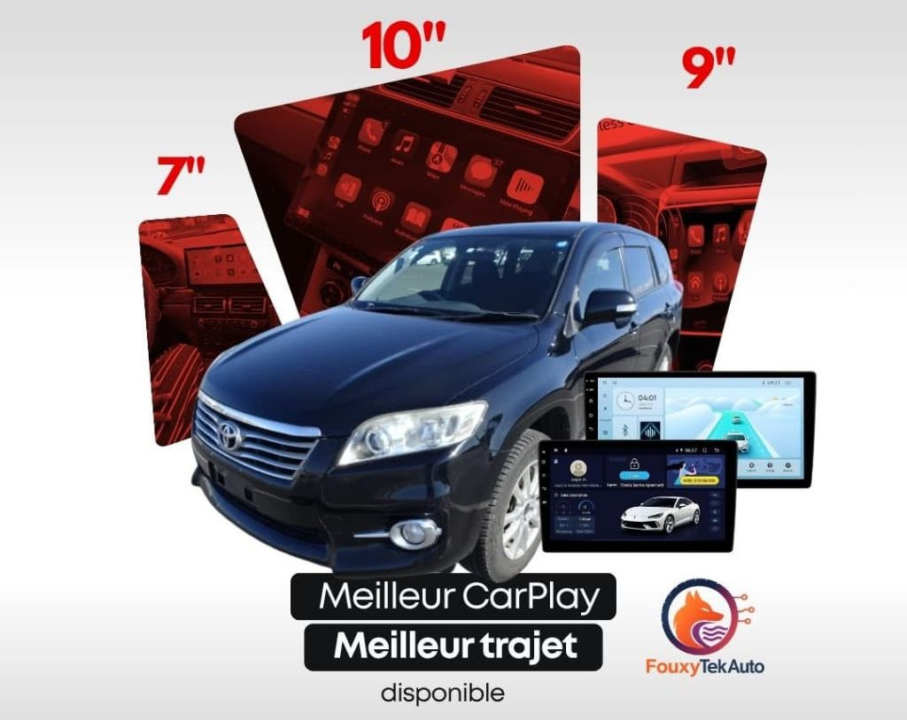
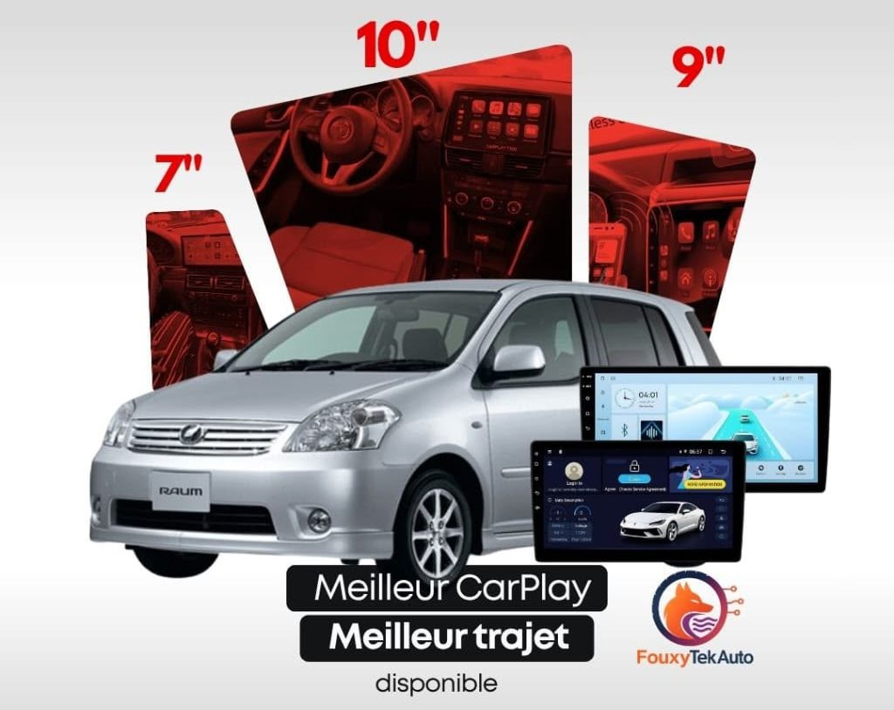
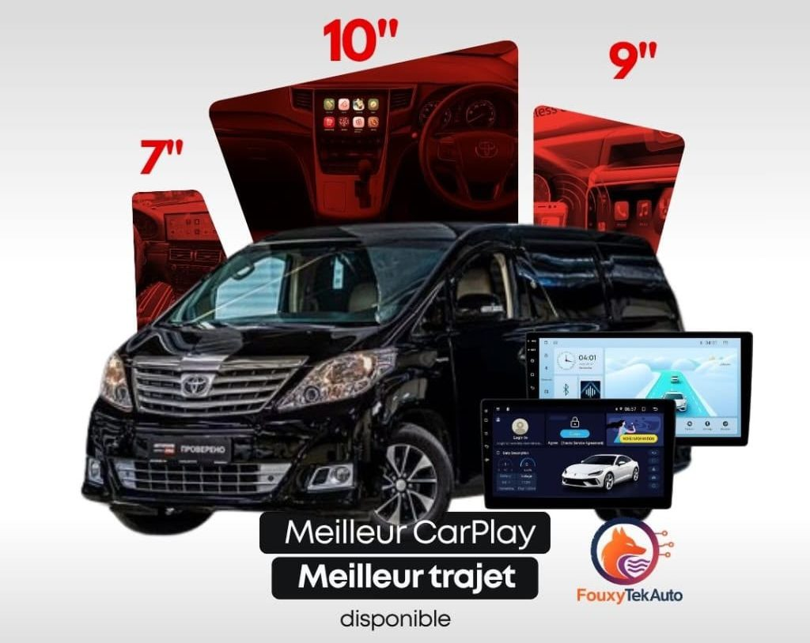
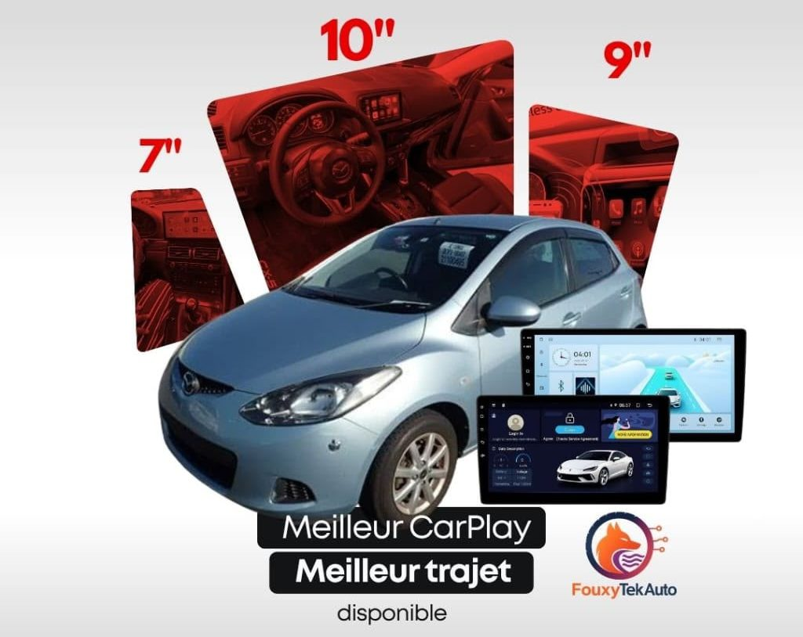

Toyota Prado
Toyota Prado Toyota Hilux
Toyota Hilux
Toyota RAV4
Toyota Raum
Toyota Alphard
Mazda DemioToyota PradoToyota Hilux
Toyota RAV4
Toyota Raum
Toyota Alphard
Mazda DemioTrouvez l'écran compatible ou envoyez-nous une photo de votre tableau de bord sur WhatsApp.